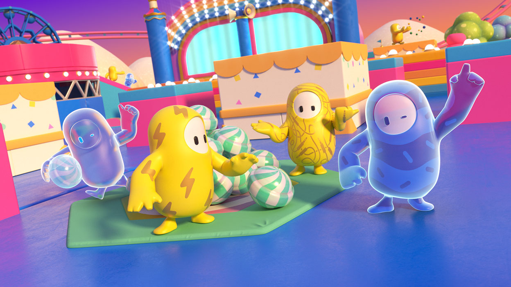
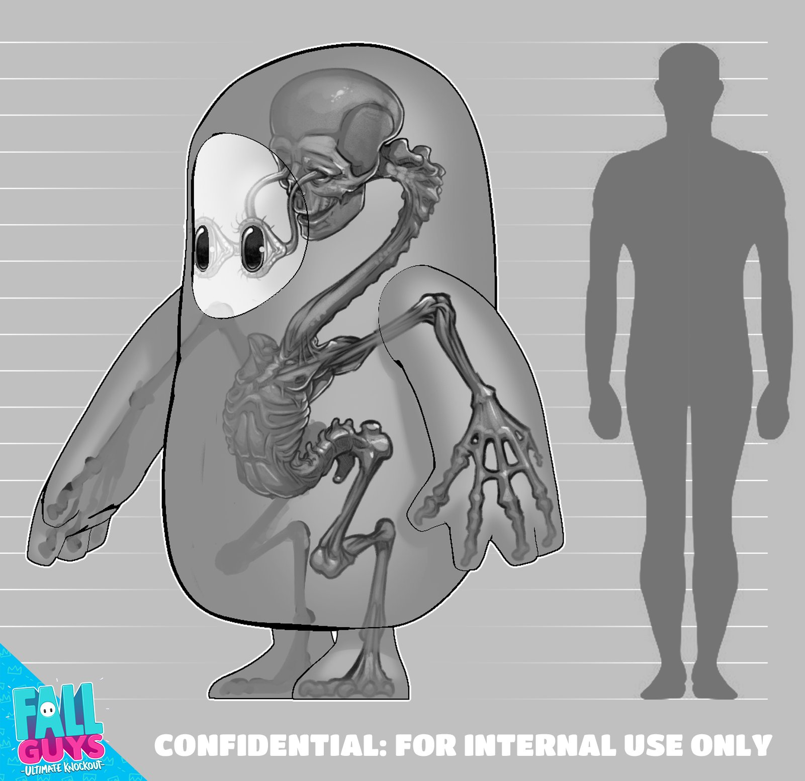
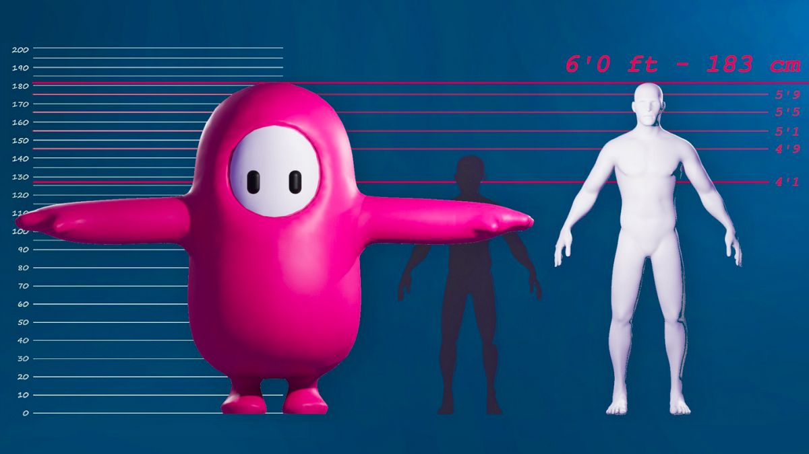
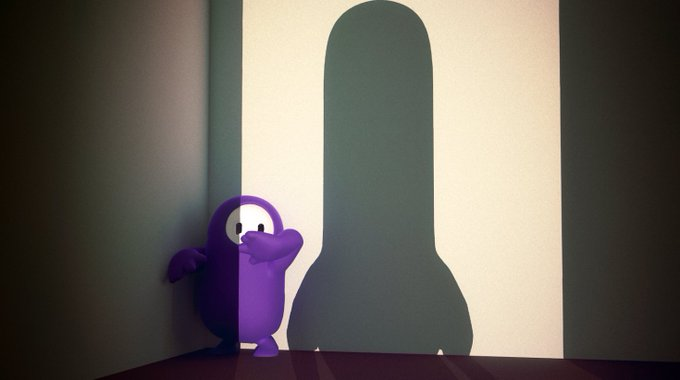
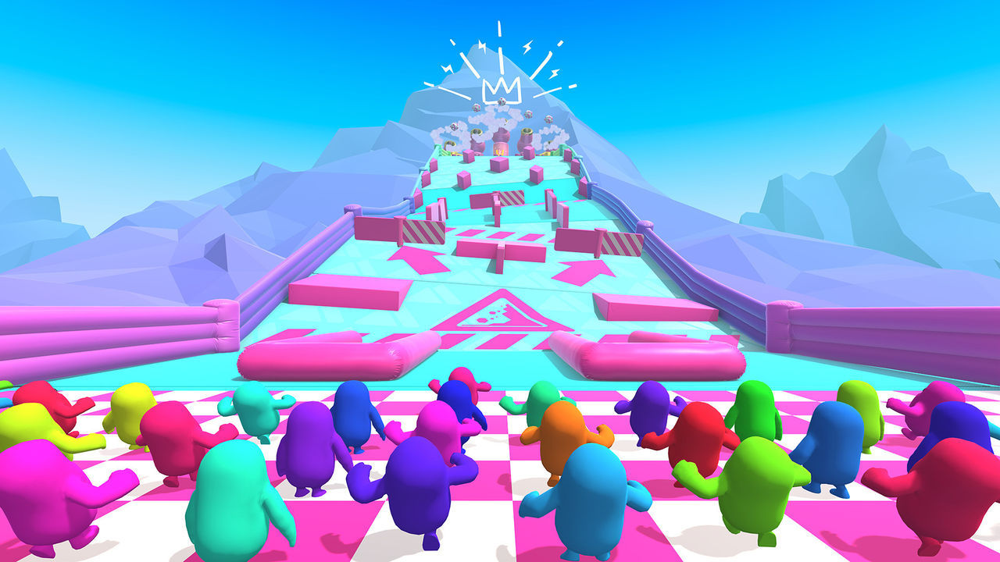
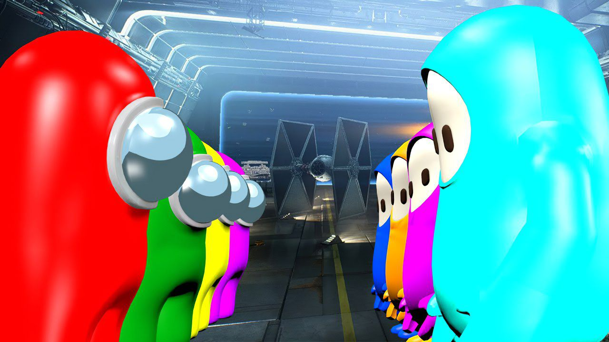
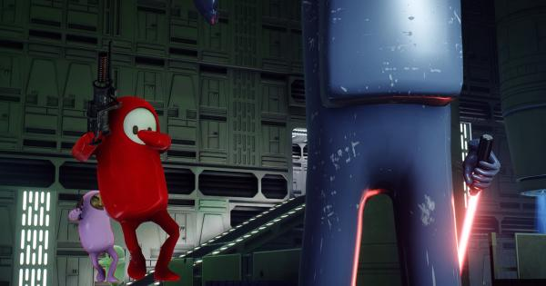

HISTORIA

¿Qué son los Fall Guys?
Los Fall guys son seres de un planeta lejano que compiten en una serie de juegos y pistas de manera
interminable.
Viven en un planeta donde unicamente hay circuitos de juegos y pistas, en el cual los
Fall guys compiten entre ellos para ver quien es el mejor.
Los Fall guys no tienen un nombre, ellos socializan entre ellos y se divierten en los juegos y
pistas, son competitivos, algunos son mas
amigables que otros, trabajan en equipo y colaboran entre ellos para poder ganar.
Estan diseñados para competir, por lo que pueden pasar horas corriendo y saltando sin cansarse ni
pasar hambre.
El valor de un Fall guy se mide por cuántas veces ha ganado un juego o pista, los fall guys mas
respetados son los que mas veces han ganado.
|
ANATOMÍA
¿Comó es la anatomia de un Fall guy?
En el interior de un Fall guy promedio podemos observar la estructura esquelética de un ser humano,
pero con algunas significativas diferencias,
El Fall guys presenta unas malformidades en su anatomia, éste tiene una postura mas erguida, huesos
fusionados, extremidades mas cortas, manos y pies grandes.
Tiene grandes ojos donde los globos oculares sobresaliendo de sus cavidades conectando con el
cerebro.

No podemos determinar si él precede del ser humano o si es un ser humano con deformidades, Los Fall
guys logran vivir una eternidad,
por lo que no que no requieren reproducirse por lapsos largos de tiempo.
Además de que éstos se alimentan por los pies, al no tener boca, éstos se desarrollaron de tal
manera que absorben los nutrientes
necesarios por el suelo.
Los Fall guys no tienen órganos reproductores, por lo que éstos se reproducen por medio de la
partenogénesis,
que es un tipo de reproducción unisexual en el que las hembras originan descendencia sin fecundación
por los machos.

La estatura de un fall guy promedio es de 1.82 metros (6 pies) comparada a la del ser humano, por lo
que su considerable tamaño lo hace un poco más pesado.
No hay una manera de reconocer el género del Fall guy, debido a que ambos tienen las mismas
características, solamente ellos lo pueden distinguir,
ya que usualmente ellos pueden usar vestimenta de ambos generos sin ningún problema.
El fall guys mas alto llega a medir 2.44 metros (8 pies).

Los Fall guys regularmente suelen andar desnudos en las competencias ya que la vestimenta no la
requieren, pero disfrutan mucho de disfrazarse y utilizar todo tipo de ropa y
accesorios extravagantes, sobre todo de la cultura polular terrestre.
|
COMPETICIONES
¿por qué los fall guys compiten entre ellos?
Los fall guys transmiten por TV sus competencias por todo el universo por lo que todas sus carreras
son vistas a nivel
universal.
La estación de TV que transmite las carreras se le conoce como "Fall guys TV" que puede
ser sintonizada
en cualquier planeta del universo, sólo debe sintonizarse correctamente.
Los fall guys viven para competir, lo hacen las 24 horas del día, los 7 días de la semana.
Si no están compitiendo, están esperando para volver a competir.

Los fall guys no pueden morir, cuando un fall guy pierde son enviados a una especie de purgatorio
donde caen indefinidamente
donde tienen tiempo para pensar en lo que hicieron mal.
Dónde tienen un momento de serenidad, dónde después vuelven al podio a celebrar sus logros.
Debido a que no tienen una necesidad de crecer su población, los Fall guys llegan a utilizar sus
huevos en sus competiciones por equipos, sin preocupación
de que estos se rompan o se dañen.
|
GUERRA CONTRA EL IMPOSTOR
¿Qué sucedió en el día D?
Una de las batallas mas legendarias y persistentes de todo el universo ha sido la batalla entre los
fall guys y los impostores.

Estos últimos llegaron al planeta de los Fall guys con intenciones de colonizar, lo cual gracias al
trabajo en equipo de los fall guys lograron impedir
el avance de los impostores, desterrando a estos ultimos al espacio.

Los fall guys y los impostores llevan en guerra varios milenios, se calcula que han ganado más de
1000 batallas contra los impostores,
aún hay impostores entre los fall guys, esperando el momento exacto para volver a atacar.
|